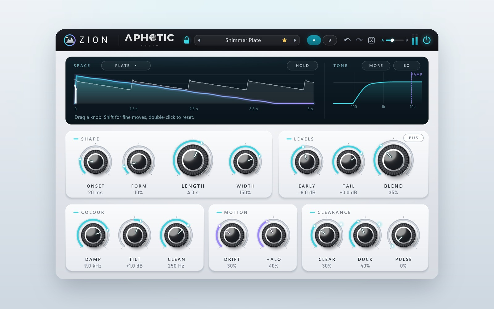
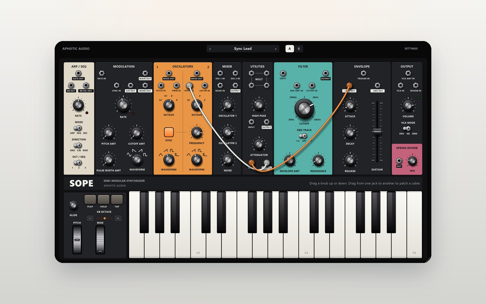
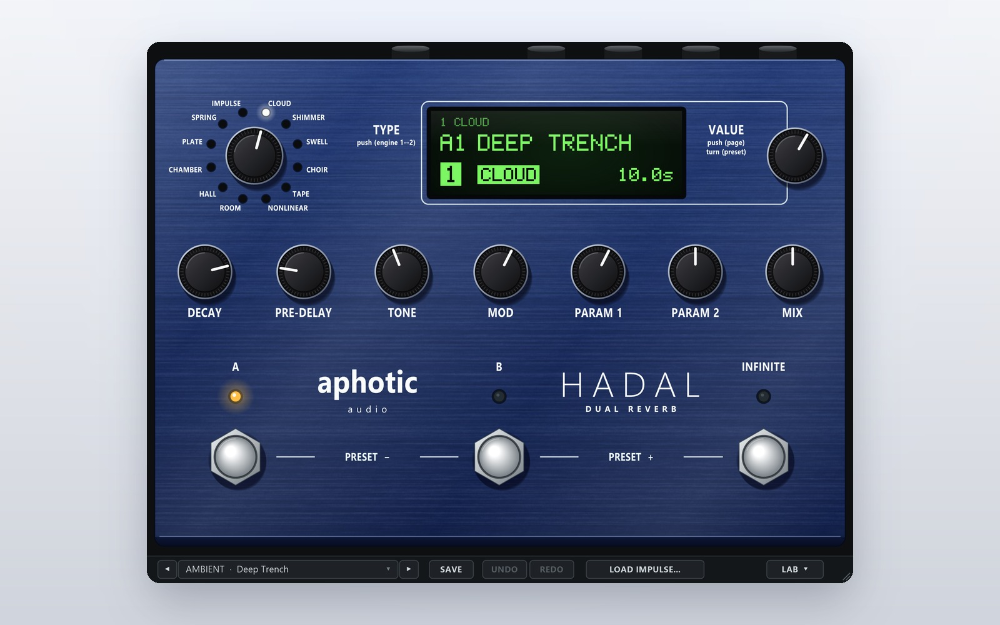
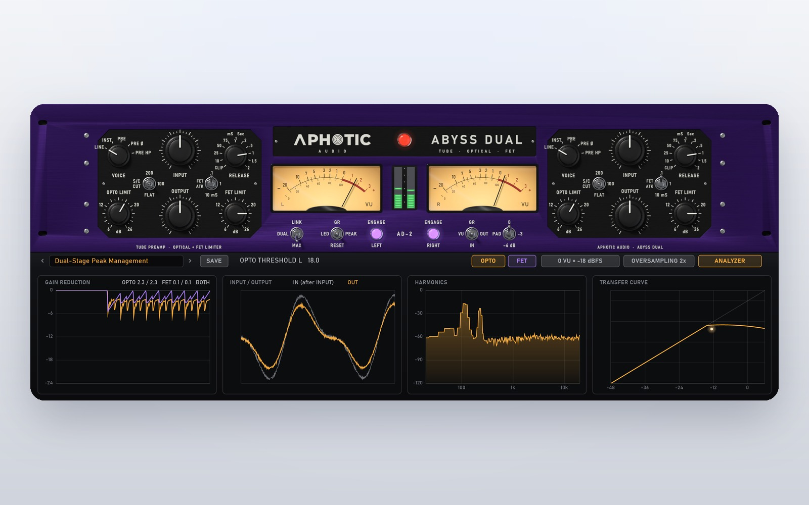

Pitch, tone and air for every vocal.
Plug-ins for Windows and Mac, from free pitch correction to a full analog channel strip, a chorus pedal, two reverbs, a tube limiter and a synthesizer. One free app installs and updates them.
One vocal chain
Use them on a vocal in this order: tune it, give it body and weight, then open up the top. Each one also works on its own, on any track.
-
Pitch
TRINITY
Pitch correction that goes from natural to hard-locked, with formant-preserving correction that keeps the voice sounding like the singer.
Free with an Aphotic Audio account. Installs in one click.
Features and specs
Classic follows the singer and leaves the expression in. Underground snaps every note to the key for the locked sound modern rap vocals are built on.
Set the key and scale, pick a vocal range, and watch the live pitch display show what you sang, what came out and the note it's aiming for. Or send MIDI notes and TRINITY tunes to the notes you play.
- Classic and Underground tuning styles
- Live pitch display, with waveform and spectrum views
- MIDI target notes: play the notes to tune to
- Retune speed, correction, humanize, transition, tracking and sustain
- Pitch, formant and mix shaping
- Key, scale, A4 reference and vocal range
- Undo and redo, A/B compare and four colour themes
- Latency
- HQ 10 ms, Low Latency 1.5 ms at 48 kHz
- Formats
- Windows VST3, macOS VST3 and AU
- Version
- 1.2.0
- Computers
- Up to 3 per license
-
Tone
IRON & GLASS
A British console preamp and EQ, into a tube optical compressor that holds a vocal steady without squashing it.
$33Buy for $33One-time purchase. Use your Hub email at checkout, then install in Aphotic Hub.
Features and specs
Iron is the console half: a Class-A preamp with transformer iron you can drive from clean to thick, then an EQ with curves fitted to the original circuit.
Glass is the tube optical compressor. Blend it in with the mix knob, keep the low end from pumping it with the sidechain high-pass, and put it before or after the EQ.
- Mic and line input modes with iron drive
- Fixed, Manual and Fix/Man compressor timing
- VU meter for input, gain reduction and output
- A/B compare and presets
- EQ
- Air 12 kHz, mid 360 Hz to 7.2 kHz, low 35 to 220 Hz, high-pass 50 to 300 Hz
- Oversampling
- Off, 2x, 4x or 8x
- Formats
- Windows VST3 (64-bit), macOS VST3 and AU (Apple silicon and Intel)
- Version
- 1.22.2
-
Air
AIR
One knob that lifts the top of a vocal, mix or instrument and never turns harsh: esses get less lift than everything else.
$10Buy for $10One-time purchase. Use your Hub email at checkout, then install in Aphotic Hub.
Features and specs
A dynamic shelf set above the harsh zone, plus an octave-up sheen for sources that came in dull. Built-in smoothing means pushing it harder only gets smoother.
- 16 presets for vocals, mix bus, master and instruments
- Click-free preset switching
- Live AIR and SMOOTH meters
- Resizable interface
- Latency
- Zero
- Formats
- Windows VST3 (64-bit), macOS VST3 and AU (Apple silicon and Intel)
- Version
- 1.6.1
- Computers
- Up to 3 per license
Chorus pedal · New
SANTA
A lush stereo chorus in a pedal you can actually use: three knobs, a footswitch, and Santa's nose. Click it and it glows red and adds warm tube drive.
- Three-voice stereo ensemble with a slow random drift: wide, smooth and never seasick
- Lows stay dry and tight; the chorus is rounded off like a vintage analog chip
- Rate, Depth and Mix, plus a footswitch with a status LED
- Tube drive on the nose: soft warmth on quiet parts, real crunch when you hit it
- Zero latency, resizable interface
One-time purchase. Use your Hub email at checkout, then install in Aphotic Hub. Windows VST3 (64-bit); not on Mac yet. Version 1.2.0. Up to 3 computers per license.

Reverb · New
ZION
A reverb that draws the space you are building and keeps your mix clear while it blooms. Turn a knob and the display shows the gap, the reflections, the swell and the decay.
- Dense, smooth tail from 0.2 to 30 seconds, with real early reflections
- Clear dips the reverb only where your vocal plays; Duck and tempo-locked Pulse
- Halo octave shimmer, Drift movement, and Hold for endless pads
- 20 presets, save your own, A/B compare
- Zero latency, low CPU, resizable interface
One-time purchase. Use your Hub email at checkout, then install in Aphotic Hub. Windows VST3 (64-bit); not on Mac yet. Version 1.0.0. Up to 3 computers per license.

Synthesizer · New
SOPE
A semi-modular analog-style synth you can play the moment it opens, and rewire when you want more. Drag from one jack to another and a cable hangs between them.
- Two oscillators with hard sync, a mixer that overdrives and a four-pole ladder filter
- 37 patch points, saved with your project and your presets
- LFO, sample & hold, spring reverb, arpeggiator and a 256-note sequencer that follow your tempo
- 34 presets, save your own, on-screen keyboard
- Low CPU, resizable interface
One-time purchase. Use your Hub email at checkout, then install in Aphotic Hub. Windows VST3 instrument (64-bit); not on Mac yet. Version 1.0.0. Up to 3 computers per license.

Reverb pedal · New
HADAL
Two reverbs in one pedal. Pick from twelve machines, run one into the other or side by side, and switch between two complete sounds with a footswitch.
- Twelve machines: Room, Hall, Chamber, Plate, Spring, Impulse, Cloud, Shimmer, Swell, Choir, Tape and Nonlinear
- Two engines in series or in parallel, each with its own machine and knobs
- Footswitches A and B hold two sounds; Infinite freezes the reverb while you keep playing
- Impulse plays six built-in spaces or your own WAV impulse responses
- 40 presets, MIDI learn and a LAB panel with live meters; zero latency, resizable interface
One-time purchase. Use your Hub email at checkout, then install in Aphotic Hub. Windows VST3 (64-bit); not on Mac yet. Version 1.0.0. Up to 3 computers per license.

Tube limiter · New
ABYSS DUAL
A two-channel tube limiter in a rack unit. A smooth optical limiter and a fast FET limiter work in a row on each side: what the first one misses, the second one catches.
- OPTO: slow, smooth and deep (10:1), with a sidechain cut so bass does not pump it
- FET: fast and firm (20:1), attack from 0.1 to 10 ms, release from 10 ms to 2 s, and a CLIP position
- A tube stage that stays clean at normal levels and adds colour as you push it
- Dual, Link or Max stereo modes; two VU meters with real VU movement and LED bars
- 20 presets, an analyzer panel, oversampling up to 8x; zero latency, resizable interface
One-time purchase. Use your Hub email at checkout, then install in Aphotic Hub. Windows VST3 (64-bit); not on Mac yet. Version 1.0.0. Up to 3 computers per license.

The DAW · Public beta
MONDAY
Our DAW, built for rap vocals and beats: record with takes and punch-ins, make beats in the step sequencer, mix on a console and export every version of a song at once.
- Takes, comping, punch-ins and clean edits (mute, reverse or bleep a word)
- Step sequencer with MONDAY DRUMS: your own sounds, 808s that follow the key, hi-hat rolls
- Piano roll and MONDAY SYNTH, tempo changes, insert and duplicate bars
- Console mixer with plug-in delay compensation, your VST3s and MONDAY's own EQ, compressor, de-esser, reverb, delay and limiter
- Export WAV, FLAC, MP3, stems, or main, clean, instrumental, acapella and TV track in one go
Windows 10 and 11; the Mac version is on its way. Version 0.25.0. It's a beta: keep copies of your projects.

Aphotic Hub installs every plug-in for you.
Version 1.2.0. Windows 10 or 11 (64-bit), or macOS on Apple silicon or Intel.
It's free. Sign in once and click Install: each plug-in lands where your DAW looks for it, activates on your computer, and updates itself when a new version comes out. Your licenses move with you to a new computer.

Download the Hub
Run the installer. If Windows says it protected your PC, click More info, then Run anyway.
Create your account
Confirm your email with the 6-digit code we send. Bought a plug-in? Use the email you paid with, or redeem the licence key from your receipt.
Install your plug-ins
TRINITY installs in one click. Plug-ins you bought are already in your library.
Open your DAW
Rescan plug-ins and load them on a vocal. The Hub keeps them up to date.
Help
Something else? Email aphoticsupport@gmail.com.
I paid. Where's my plug-in?
Install Aphotic Hub and sign in with the email you used at checkout, or create an account with it and enter the code we email you. The plug-in appears in your Library within a minute of paying: click Install. Your receipt comes from Gumroad. Buying from inside the Hub? Its Buy now button opens Gumroad with your account email already filled in.
I used a different email at checkout.
Open Aphotic Hub, go to Library and paste the licence key from your Gumroad receipt under Bought on Gumroad with another email?. The plug-in moves into your account straight away. Stuck? Email aphoticsupport@gmail.com with your order number.
How many computers can I use?
Each plug-in activates on up to 3 of your computers. To free a slot, deactivate a computer on the Hub's Account page (up to 3 moves per plug-in each month; email us if you need more).
Which DAWs and systems work?
Any DAW that loads VST3 plug-ins on Windows 10 or 11 (64-bit). On a Mac (macOS 11 or later, Apple silicon or Intel) TRINITY, IRON & GLASS and AIR come as VST3 and AU, so they also work in Logic Pro and GarageBand. SANTA, ZION, SOPE, HADAL and ABYSS DUAL are Windows only for now.
My computer warns me about the installer.
The Hub isn't signed with a paid certificate yet, so Windows shows "Windows protected your PC": click More info, then Run anyway. On a Mac, open System Settings, then Privacy & Security, and click Open Anyway once.
Can I get a refund?
If a plug-in doesn't work on a computer that meets its requirements and we can't fix it, contact us within 14 days of buying and we'll refund you. The details are in the Terms of Service.
Who handles the payment?
Gumroad is the seller of record. It takes the payment, adds any sales tax or VAT for your country and sends your receipt. Aphotic Audio never sees your card details.